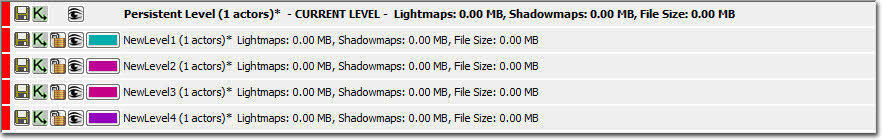
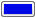
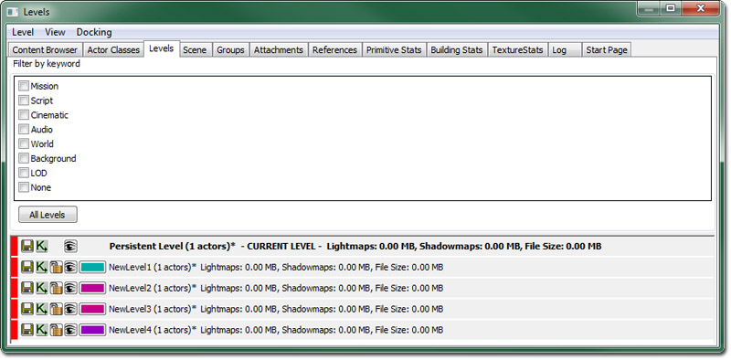
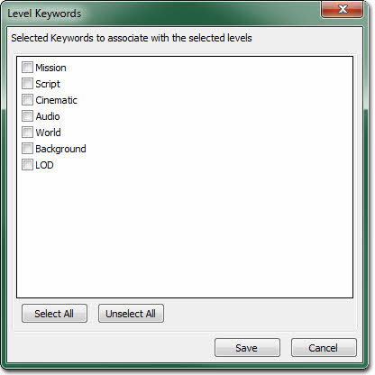

UDN
Search public documentation:
LevelBrowserReferenceCH
English Translation
日本語訳
한국어
Interested in the Unreal Engine?
Visit the Unreal Technology site.
Looking for jobs and company info?
Check out the Epic games site.
Questions about support via UDN?
Contact the UDN Staff
日本語訳
한국어
Interested in the Unreal Engine?
Visit the Unreal Technology site.
Looking for jobs and company info?
Check out the Epic games site.
Questions about support via UDN?
Contact the UDN Staff
关卡浏览器参考指南
概述
打开关卡浏览器
关卡浏览器界面

菜单栏
关卡
- New Level（新建关卡）... - 创建一个新关卡并将其添加到 Persistent（固定）关卡中。
- New Level From Selected Actor（从所选的 Actor 中新建关卡） - 创建一个新关卡并将其添加到 Persistent（固定）关卡中。
- Add Existing Level（添加现有关卡）… - 打开一个文件浏览器并允许您添加一个已经在 Persistent（固定）关卡中存在的关卡。
- Make Current（使成为当前关卡） - 设置选中关卡为当前关卡。
- Update All Actors in Level Grids（更新关卡单元格中的所有 Actor） - 后续添加相关描述。
- Auto-Update Actors in Level Grids（自动更新关卡单元格中的 Actor） - 后续添加相关描述。
- Merge Levels into New Level（将关卡合并为新的关卡） - 将当前在关卡浏览器中选中的所有关卡合并为一个独立的新关卡。
- Remove Level from World（从世界中移除关卡） - 从永久关卡中移除关卡。
视图
- Refresh（刷新） - 刷新关卡列表。
- Find in Content Browser（在内容浏览器中查找）… - 打开内容浏览器，然后为那些当前在关卡列表中选中的关卡选择软件包。
- Toggle Filter Window（启用过滤窗口） - 显示或隐藏过滤窗口。
- Level Memory/Size Data（关卡内存/大小数据） - 在关卡列表中显示内存、光照贴图和阴影贴图以及文件大小信息。
Docking(停靠状态)
- Docked(停靠) - 这个选项将会把当前浮动的浏览器停靠到主浏览器窗口中。在当前的浏览器处于停靠状态时，这个选项将处于选种状态。
- Floating(浮动) - 这个选项将会取消停靠浏览器到主要浏览器窗口的停靠状态，使它在自己的窗口中变为浮动的浏览器。在当前的浏览器处于浮动状态时，这个选项处于选中状态。
- Clone Browser(克隆浏览器) - 这个选项将会创建一个当前浏览器的副本。
- Floating Browser（浮动浏览器） - 这个选项将会移除或删除当前的浏览器。这个选项进行在有克隆的浏览器窗口存在时才启用。
关卡列表
关卡列表会显示 Persistent Level（固定关卡）以及其他 Streamed Level（动态加载关卡），还有任何在世界中出现的 LevelGridVolume（关卡单元格体积）。表示为 CURRENT（当前） 的关卡是将要被修改的关卡，如果您在编辑器窗口或者 Kismet 中对关卡进行了任何修改都会反映在 CURRENT（当前） 的关卡上。按照添加关卡的顺序显示关卡，而这些动态加载关卡可以通过选择关卡后使用向上和向下箭头按键在列表中移动它们轻松地进行记录。
关卡列表按钮
 | 保存这个关卡。它将会被禁用，除非关卡有内容发生改变使关卡标记为已使用，不过无论如何点击它还是会执行一个保存操作。 |
 | 打开这个关卡的主要 kismet 序列。 |
 | 允许您锁定或取消锁定动态加载关卡，这样它们就不可以进行修改了。这样将不会使这个关卡成为当前关卡。只适用于动态加载关卡。 |
 | 允许您在编辑器中隐藏及显示关卡，尽管这仅用于可视化的目的并且和当它运行时是否动态载入这个关卡到游戏中没有关系。但是，当您重新构建关卡时在这里可见的关卡将不会受到影响，如果您的关卡非常复杂，那么这样可以节省很多时间。 |
|  | 允许您为这个关卡选择一个颜色。它对于按照颜色排列不同类型关卡来说很有帮助。只适用于动态加载关卡。 |
关联菜单

- Make Current（使成为当前关卡） - 使选中的关卡成为当前关卡。
- Edit Properties（编辑属性）... - 打开所有选中关卡的关卡属性编辑器。
- Find in Content Browser（在内容浏览器中查找）... - 在内容浏览器中选择属于所选关卡的所有软件包。
- Find in Scene Manager（在场景管理器中查找）... - 在场景管理器中显示所选关卡。
- Select All Actors（选择所有 Actor） - 在当前关卡选项集合中选择属于关卡的所有 actor。
- Save（保存） - 保存所有选中的关卡（注意： 只可以保存可视的取消锁定关卡）。
- Show（显示） 及 Hide（隐藏） - 使所有选中的关卡可见或不可见。
- Show Only Selected（只显示选中的关卡） - 使所有选中的关卡可见，而所有其他关卡不可见。
- Show Only Unselected（只显示未选中的关卡） - 使所有选中的关卡不可见，而所有其他关卡可见。
- Show All（全部显示） - 使所有关卡可见。
- Hide All（全部隐藏） - 使所有关卡不可见。
- Lock Selected Levels（锁定选中的关卡） - 锁定所有选中的关卡。
- Unlock Selected Levels（取消锁定选中的关卡） - 取消所有选中的关卡。
- Lock All（全部锁定） - 锁定所有关卡。
- Unlock All（全部取消锁定） - 取消锁定所有关卡。
- Select All（全选） - 选择所有关卡。
- Deselect All（全部取消选择） - 清空关卡选择列表。
- Invert Level Selection（关卡反向选择） - 反向选择关卡选项集合。
- Clear Streaming Volumes（清除动态加载体积） - 为当前选中的关卡清除所有动态加载体积关联。
- Select Associated Streaming Volumes（选择相关的动态加载体积） - 在编辑器中，为选中的关卡选择所有相关动态加载体积。
- Self Contained Lighting（自包含光照） - 为每个选中的关卡启用‘自包含光照’属性。
- Assign Keywords（分配关键字）... - 允许关键字与当前选中的关卡相关。
- Make Level Current Move Selected Actors To It（使关卡成为当前关卡并将所选 Actor 移动到它） - 将所选关卡设置为当前关卡并将视窗中选中的所有 actor 移动到这个关卡。
过滤
[LevelBrowser.Keywords] +Keywords=Mission +Keywords=Script +Keywords=Cinematic +Keywords=Audio +Keywords=World +Keywords=Background +Keywords=LOD

然后可以将关键字分配给任何动态加载关卡。要想分配关键字，可以在关联菜单中选择“Assign Keywords（分配关键字）”，这将会弹出一个复选框列表对话框。 要想缩小关卡集合的范围，请使用在关卡编辑器顶部的“Filter by keyword（通过关键字过滤）”菜单。